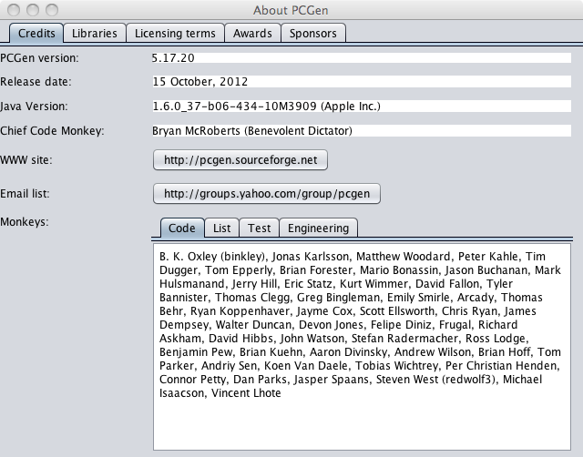

The About PCGen option displays the current release version/date of PCGen and credits the main contributors, libraries used by the code base, licensing terms, and awards won by PCGen.

The Credits option will display the release version/date of the PCGen, as well as listing the main contributors. There are far too many contributors to list them all here since PCGen is very much a community effort. Info on where to get new releases of PCGen and how to find the PCGen community is also provided. Clicking on either of the WWW site or the Email List links will take you to the appropriate web sites that are listed within the button.
The Code, List, Test and Engineering sub-tabs will display a list of the contributors by their general Monkey Groupings.
The Libraries tab displays a list of the libraries used by the PCGen code-base.
The Licensing tab displays the terms if the licenses used by the PCGen team in the production of PCGen and its data sets.
The Awards tab displays a list of the awards PCGen has won over the years.